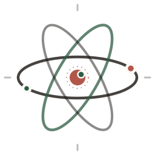

Beginner · Foundations
0%
Measurement, Units, and Significant Figures
Read a measurement correctly, convert units with confidence and round every answer to the right number of significant figures.
Electron arrangement
Sci-lab
Filling the K shell
1s2 2s2 2p6 3s1
000 / 100
More
Scales drag and wheel gestures on the 3D views.
Interactive field guide · 118 elements
A calm visual guide to the elements — explore, name and build.
Specimen rail
A slow rotation through the table
Explore
Drag to turn · scroll to zoom

Nothing hereNo elements match — try clearing the filters.
Learn
Progress saved on this device
Study at your own pace
Beginner, intermediate and advanced courses in chemistry — each broken into small sections you can finish in a sitting. Progress stays in this browser.
Read a measurement correctly, convert units with confidence and round every answer to the right number of significant figures.
Build the atom from its particles, then follow electrons into shells, subshells and orbitals.
Read the table like a map: how size, ionisation energy and electronegativity shift across periods and down groups.
Why atoms join: ionic transfer, covalent sharing, metallic seas and the forces that hold molecules together.
From crystal lattices to supercritical fluids: why solids hold, liquids flow, gases fill and matter changes phase.
Read an equation, balance it and name what happened: synthesis, decomposition, replacement, combustion and redox.
Count particles by weighing them, balance equations and predict the limiting reactant and the yield.
Predict when a salt precipitates: write Ksp expressions, calculate molar solubility and compare Q with Ksp.
Work with pH, Ka and Kb, then keep a buffer steady and read a titration curve with confidence.
Drive non-spontaneous redox with current, choose the ion that discharges and calculate what deposits.
Beginner · Foundations
A practical first course in reading measurements, converting units and keeping significant figures honest.
A measurement is a number plus a unit:
12.5 cm, 3.0 kg, 250 mL
A number without a unit is usually meaningless in chemistry. Every measurement also has uncertainty: the last digit is estimated or limited by the instrument.
Example: A graduated cylinder marked every 1 mL might let you estimate to 0.1 mL. You might read 24.3 mL. The “.3” is estimated.
Chemistry uses the SI system (International System of Units).
| Quantity | Unit | Symbol |
|---|---|---|
| Length | meter | m |
| Mass | kilogram | kg |
| Time | second | s |
| Temperature | kelvin | K |
| Amount of substance | mole | mol |
| Electric current | ampere | A |
| Luminous intensity | candela | cd |
| Quantity | Unit | Symbol |
|---|---|---|
| Force | newton | N |
| Energy | joule | J |
| Pressure | pascal | Pa |
| Power | watt | W |
| Volume | cubic meter | m3 |
| Concentration | molarity | mol/L = M |
| Prefix | Symbol | Meaning |
|---|---|---|
| kilo- | k | 103 = 1000 |
| centi- | c | 10−2 = 1/100 |
| milli- | m | 10−3 = 1/1000 |
| micro- | µ | 10−6 |
| nano- | n | 10−9 |
Examples:
Use conversion factors so units cancel.
Beginner tip: Write the units in the calculation. If the unwanted unit does not cancel, flip the conversion factor.
A measurement can be precise but inaccurate if the instrument is badly calibrated.
Example: A balance reads 5.00 g, 5.01 g, 4.99 g for the same object, but the true mass is 5.50 g. The measurements are precise but not accurate.
Significant figures are the digits in a measurement that carry meaningful information about precision.
They include all certain digits plus one estimated digit.
| Rule | Example | Sig figs |
|---|---|---|
| Nonzero digits are significant | 123 | 3 |
| Zeros between nonzero digits are significant | 1002 | 4 |
| Leading zeros are not significant | 0.0045 | 2 |
| Trailing zeros after a decimal point are significant | 2.00 | 3 |
| Trailing zeros in a whole number with no decimal are ambiguous | 500 | 1, 2, or 3? |
| Use scientific notation to remove ambiguity | \(5.00 \times 10^2\) | 3 |
More examples:
Exact numbers have unlimited sig figs. Examples: counted objects (12 eggs), definitions (1 m = 100 cm), and conversion factors.
The answer has the same number of sig figs as the measurement with the fewest sig figs.
Example:
The answer has the same number of decimal places as the measurement with the fewest decimal places.
Example:
The limiting value has 1 decimal place, so:
Do the operations, keep track of sig figs, and round only at the end.
Example:
First addition:
Then multiplication:
The final answer has 2 sig figs because 3.0 has 2 sig figs.
Look at the first digit you are dropping:
Examples:
Scientific notation makes sig figs clear.
Use scientific notation when trailing zeros are ambiguous.
How many sig figs are in 0.00340?
How many sig figs are in 120.0?
Convert 45.0 cm to meters.
Convert 0.750 L to milliliters.
Calculate and round: 2.5 × 3.42
Calculate and round: 10.0 + 2.55 + 0.3
A sample has mass 12.5 g and volume 5.0 mL. What is its density?
Write 0.0000567 in scientific notation with 2 sig figs.
How many sig figs are in 500 when it is written without a decimal point?
Convert 25 °C to kelvin.
Build
Drag an element onto the bench.
Nothing on the bench yet.
Add a few atoms, then press Combine.
Field notebook · hints, not answers
Short hints for every compound and alloy. The bench is the answer key.
Collect
0 of 61 discovered
Field guide
Every product the bench saves is kept here. Build one to reveal its name.
Notebook
Saved on this device
Field notebook
A daily streak, a shelf of badges and every element or compound you have starred — kept in this browser, never on a server.
Milestones
Saved
Notebook
Saved on this device
Field notes
A pad for each course, and a loose page for everything else. Your notes stay in this browser — never on a server.
No notes yet.
New page
Notebook
Field notes
Search by name, symbol or number, or tap any tile.
Facts, safety notes and a Bohr model open over the table.
Add atoms on the bench, then press Combine.
Products save to this device and light up the index.
No account, no server — everything stays in this browser.
Step 1 of 12